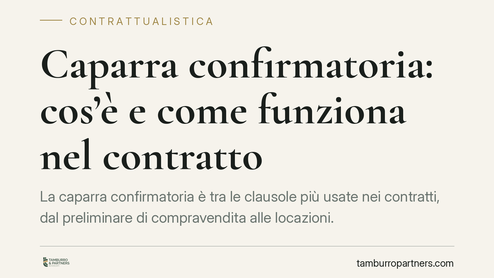
Caparra confirmatoria: cos'è e come funziona nel contratto
La caparra confirmatoria è tra le clausole più usate nei contratti, dal preliminare di compravendita alle locazioni. Serve a rafforzare l'impegno delle parti e a predeterminare le …
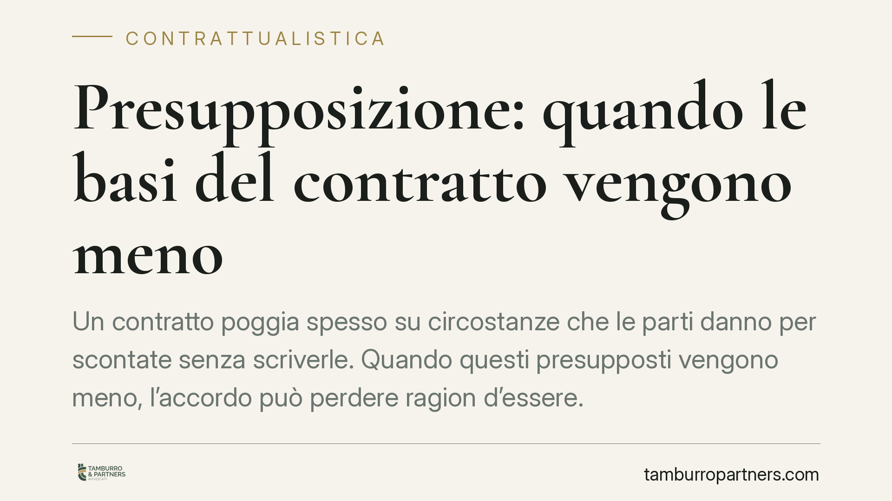
Presupposizione: quando le basi del contratto vengono meno
Un contratto poggia spesso su circostanze che le parti danno per scontate senza scriverle. Quando questi presupposti vengono meno, l'accordo può perdere ragion d'essere. La presupp…
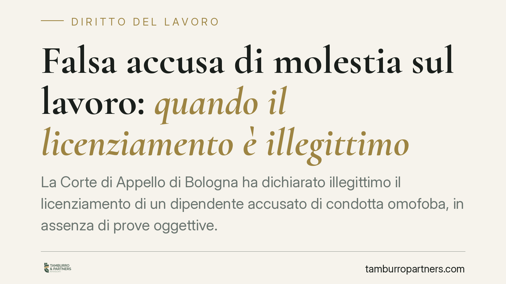
Falsa accusa di molestia sul lavoro: quando il licenziamento è illegittimo
La Corte di Appello di Bologna ha dichiarato illegittimo il licenziamento di un dipendente accusato di condotta omofoba, in assenza di prove oggettive. La pronuncia ribadisce che l…
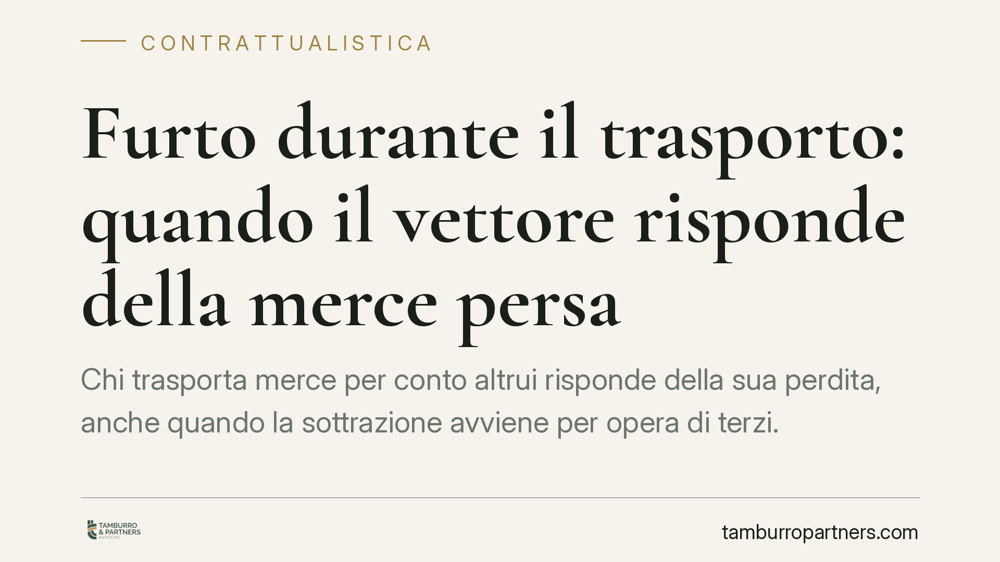
Furto durante il trasporto: quando il vettore risponde della merce persa
Chi trasporta merce per conto altrui risponde della sua perdita, anche quando la sottrazione avviene per opera di terzi. Lo ribadisce la Corte d'Appello di Torino: la rapina non ba…
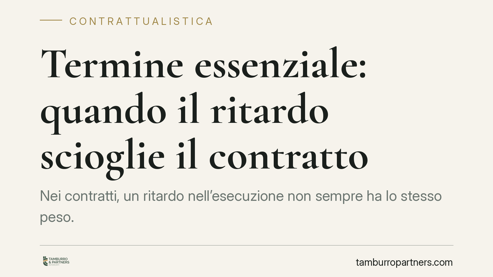
Termine essenziale: quando il ritardo scioglie il contratto
Nei contratti, un ritardo nell'esecuzione non sempre ha lo stesso peso. Quando il termine è "essenziale", il ritardo può sciogliere il contratto in modo pressoché automatico, senza…
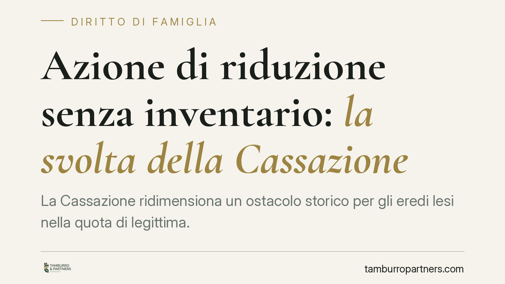
Azione di riduzione senza inventario: la svolta della Cassazione
La Cassazione ridimensiona un ostacolo storico per gli eredi lesi nella quota di legittima. Quando il patrimonio lasciato dal defunto è minimo rispetto alle donazioni fatte in vita…
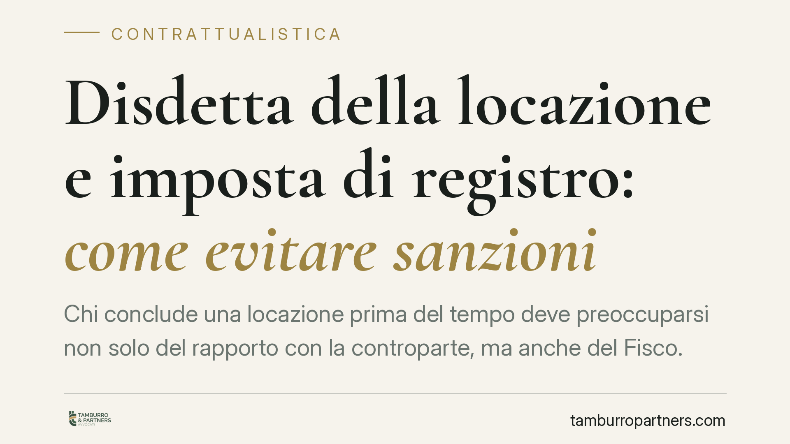
Disdetta della locazione e imposta di registro: come evitare sanzioni
Chi conclude una locazione prima del tempo deve preoccuparsi non solo del rapporto con la controparte, ma anche del Fisco. La cessazione va documentata e registrata: senza prova fo…
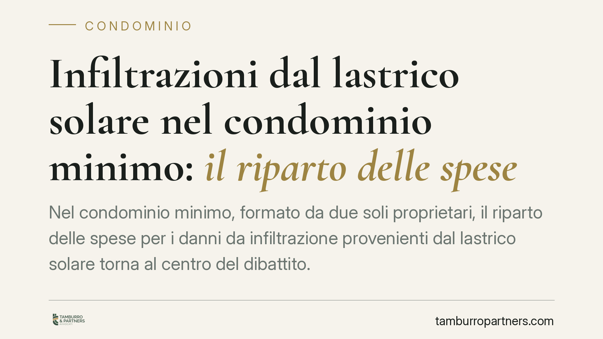
Infiltrazioni dal lastrico solare nel condominio minimo: il riparto delle spese
Nel condominio minimo, formato da due soli proprietari, il riparto delle spese per i danni da infiltrazione provenienti dal lastrico solare torna al centro del dibattito. La qualif…
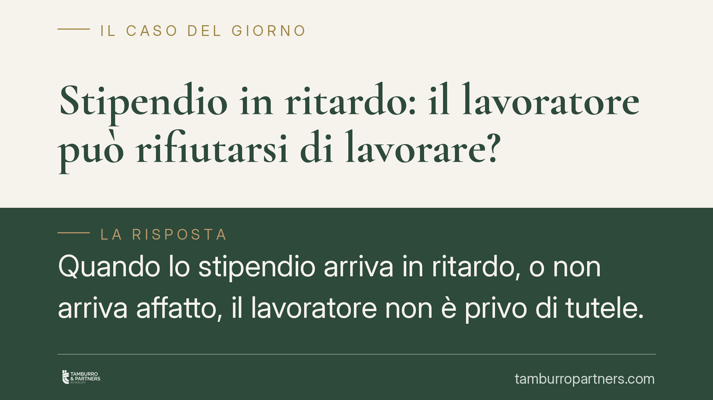
Stipendio in ritardo: il lavoratore può rifiutarsi di lavorare?
Quando lo stipendio arriva in ritardo, o non arriva affatto, il lavoratore non è privo di tutele. Può, entro limiti precisi, sospendere la prestazione, agire in giudizio per ottene…
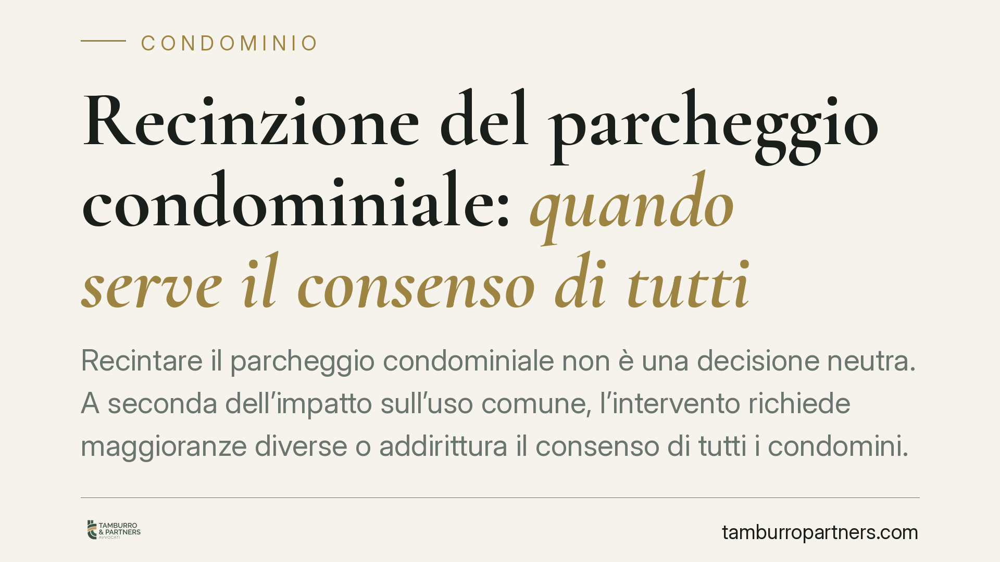
Recinzione del parcheggio condominiale: quando serve il consenso di tutti
Recintare il parcheggio condominiale non è una decisione neutra. A seconda dell'impatto sull'uso comune, l'intervento richiede maggioranze diverse o addirittura il consenso di tutt…
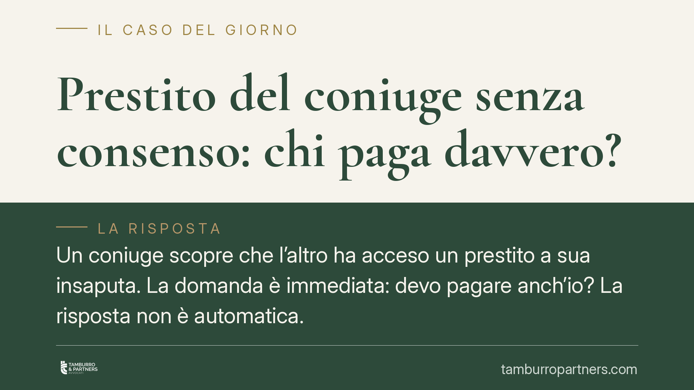
Prestito del coniuge senza consenso: chi paga davvero?
Un coniuge scopre che l'altro ha acceso un prestito a sua insaputa. La domanda è immediata: devo pagare anch'io? La risposta non è automatica. Dipende da due elementi: il regime pa…
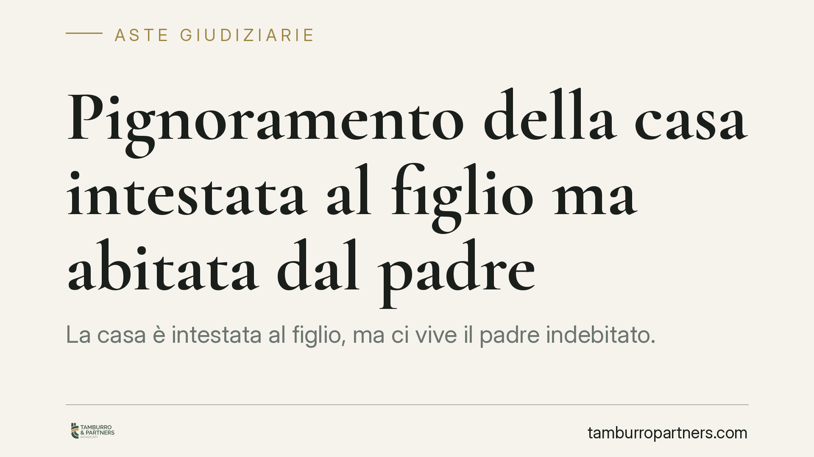
Pignoramento della casa intestata al figlio ma abitata dal padre
La casa è intestata al figlio, ma ci vive il padre indebitato. I creditori possono aggredirla? La risposta cambia radicalmente a seconda di chi ha contratto il debito e di come l'i…
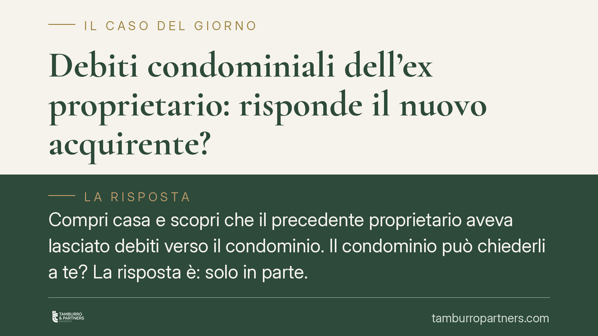
Debiti condominiali dell'ex proprietario: risponde il nuovo acquirente?
Compri casa e scopri che il precedente proprietario aveva lasciato debiti verso il condominio. Il condominio può chiederli a te? La risposta è: solo in parte. La legge fissa un lim…
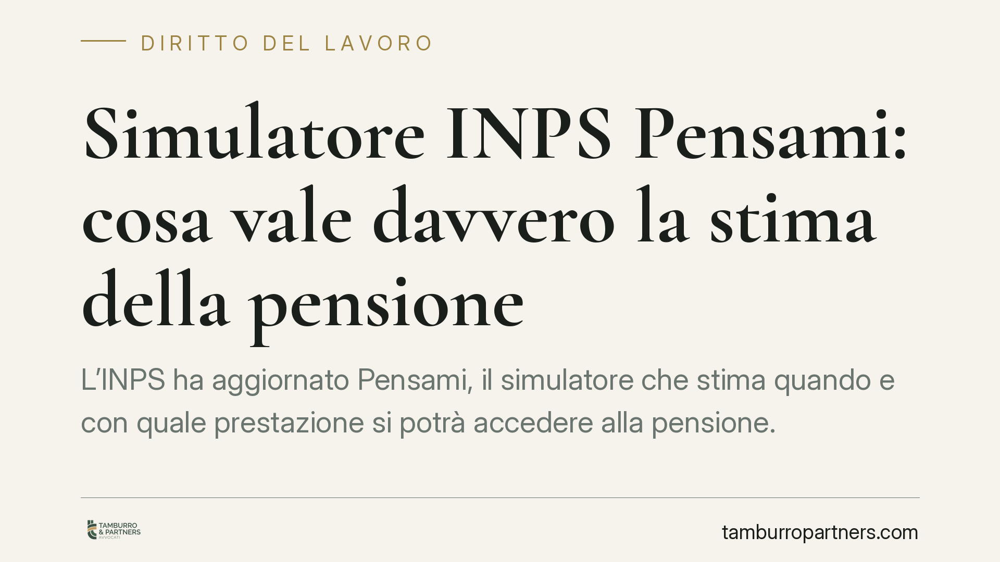
Simulatore INPS "Pensami": cosa vale davvero la stima della pensione
L'INPS ha aggiornato "Pensami", il simulatore che stima quando e con quale prestazione si potrà accedere alla pensione. Lo strumento è utile per orientarsi, ma il suo esito non è u…
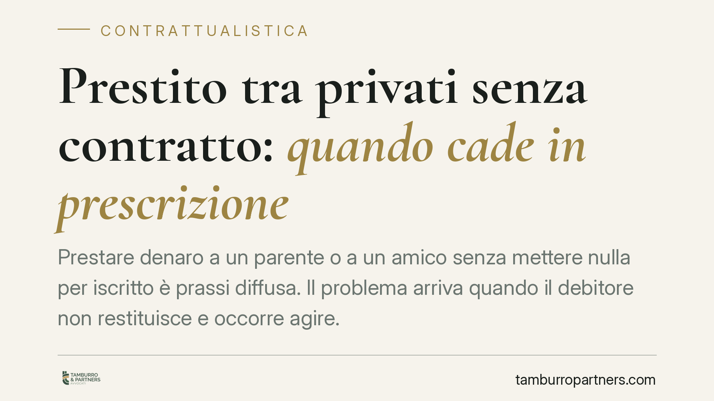
Prestito tra privati senza contratto: quando cade in prescrizione
Prestare denaro a un parente o a un amico senza mettere nulla per iscritto è prassi diffusa. Il problema arriva quando il debitore non restituisce e occorre agire. Il credito non è…
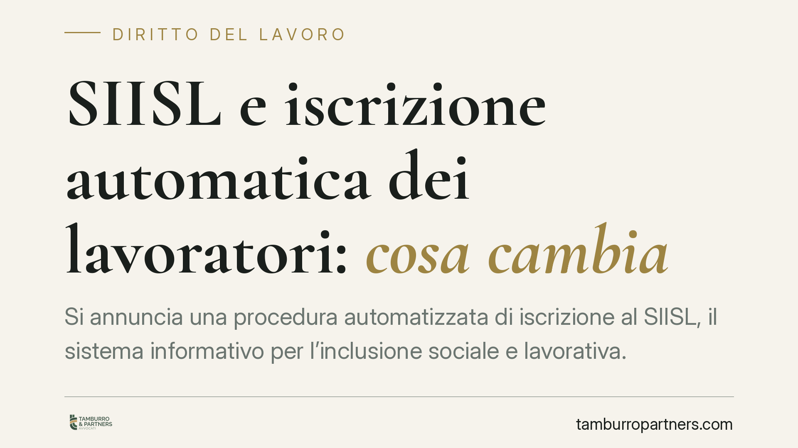
SIISL e iscrizione automatica dei lavoratori: cosa cambia
Si annuncia una procedura automatizzata di iscrizione al SIISL, il sistema informativo per l'inclusione sociale e lavorativa. Il meccanismo coinvolgerebbe più amministrazioni e ope…
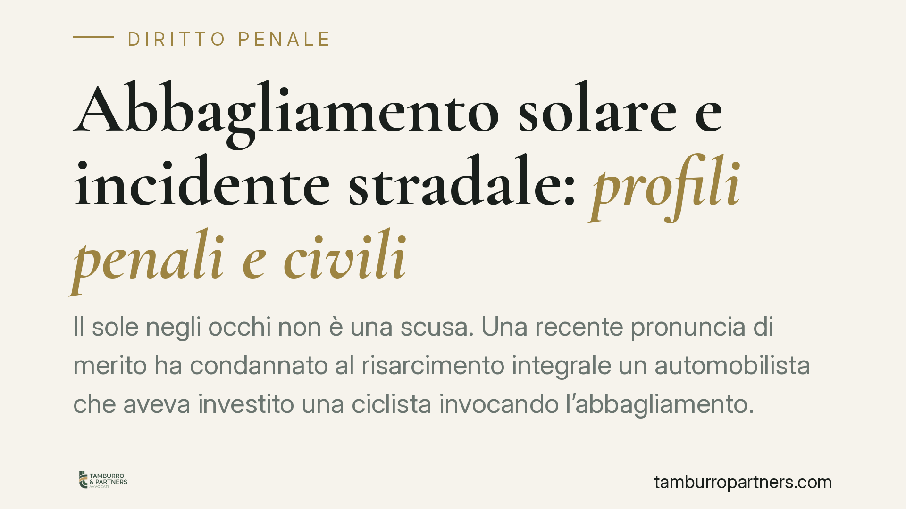
Abbagliamento solare e incidente stradale: profili penali e civili
Il sole negli occhi non è una scusa. Una recente pronuncia di merito ha condannato al risarcimento integrale un automobilista che aveva investito una ciclista invocando l'abbagliam…
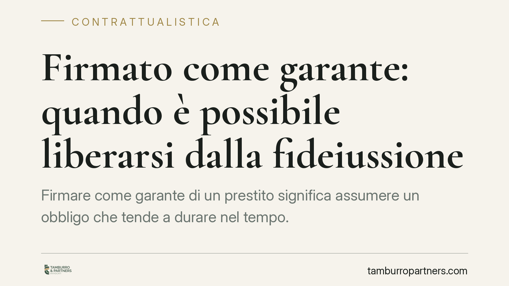
Firmato come garante: quando è possibile liberarsi dalla fideiussione
Firmare come garante di un prestito significa assumere un obbligo che tende a durare nel tempo. Non è però un vincolo indissolubile: il codice civile prevede casi in cui il fideius…
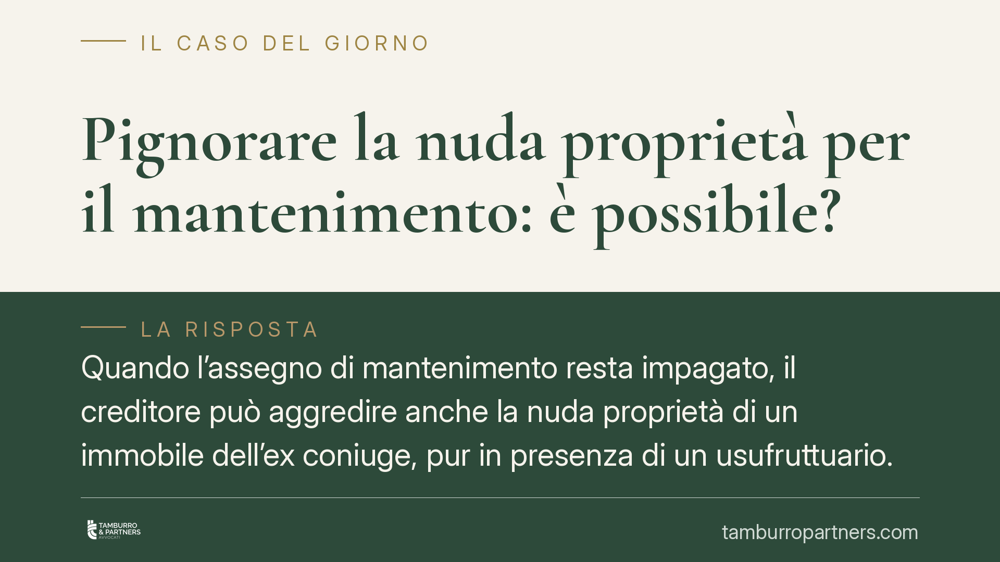
Pignorare la nuda proprietà per il mantenimento: è possibile?
Quando l'assegno di mantenimento resta impagato, il creditore può aggredire anche la nuda proprietà di un immobile dell'ex coniuge, pur in presenza di un usufruttuario. Un'opzione …
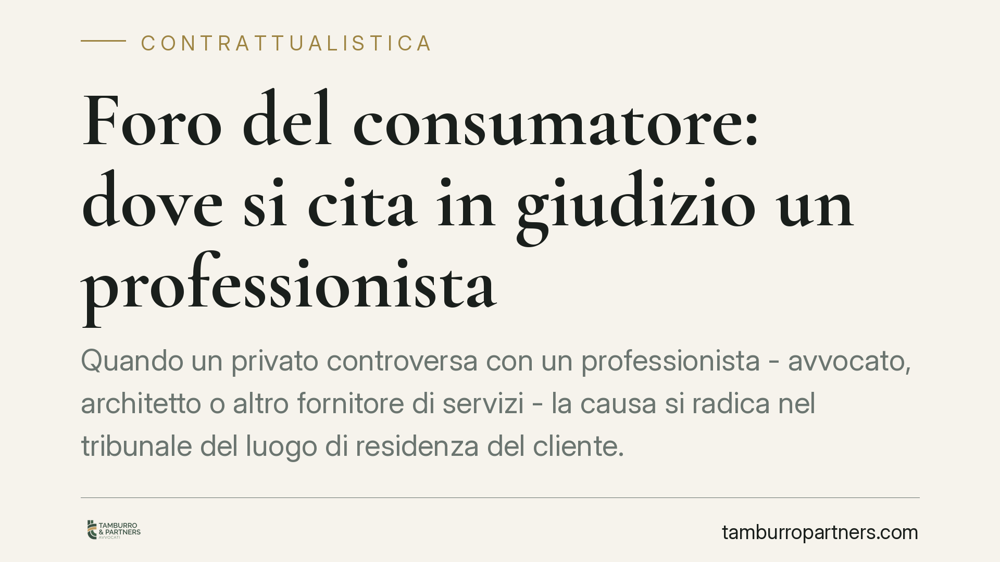
Foro del consumatore: dove si cita in giudizio un professionista
Quando un privato controversa con un professionista - avvocato, architetto o altro fornitore di servizi - la causa si radica nel tribunale del luogo di residenza del cliente. È il …
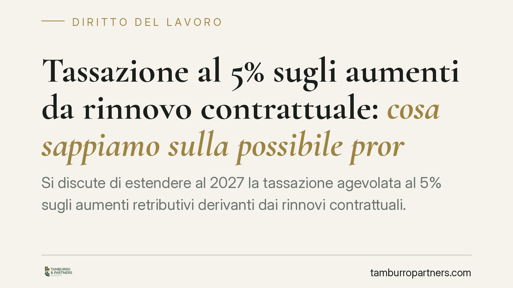
Tassazione al 5% sugli aumenti da rinnovo contrattuale: cosa sappiamo sulla possibile proroga al 2027
Si discute di estendere al 2027 la tassazione agevolata al 5% sugli aumenti retributivi derivanti dai rinnovi contrattuali. È bene distinguere ciò che è già previsto per il 2026 da…
Manovra 2027: IRPEF, contratti agevolati e rinnovi collettivi
Le bozze della manovra 2027 delineano un pacchetto che tocca IRPEF, incentivi al lavoro e sostegni alle famiglie. Tra le ipotesi circolate: aliquota al 33% fino a 60mila euro e tas…
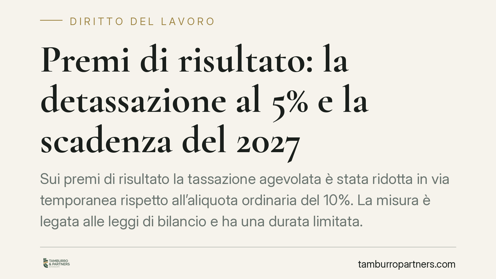
Premi di risultato: la detassazione al 5% e la scadenza del 2027
Sui premi di risultato la tassazione agevolata è stata ridotta in via temporanea rispetto all'aliquota ordinaria del 10%. La misura è legata alle leggi di bilancio e ha una durata …
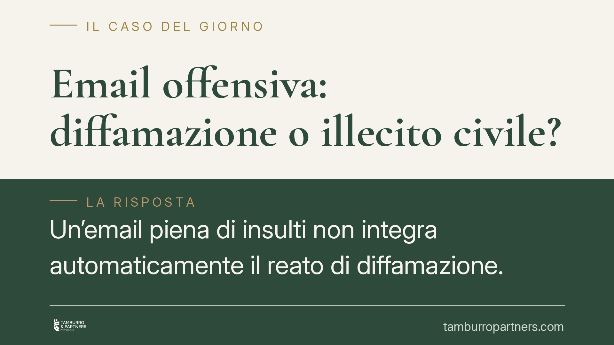
Email offensiva: diffamazione o illecito civile?
Un'email piena di insulti non integra automaticamente il reato di diffamazione. La Corte di Cassazione ha precisato che, se il messaggio raggiunge un solo destinatario e riguarda p…

Detassazione al 15% su notturni e festivi: una misura solo per il 2026
La legge di Bilancio 2026 dovrebbe introdurre un'imposta sostitutiva agevolata al 15% sulle indennità per lavoro notturno, festivo e a turni. Il punto critico è la durata: la misur…

Retribuzione congrua e CCNL: il parametro dei minimi tabellari
Quando una retribuzione è adeguata? La questione torna centrale per imprese e lavoratori. Il riferimento resta l'art. 36 della Costituzione, letto dalla giurisprudenza attraverso i…

Custodia in carcere e art. 275 c.p.p.: la Cassazione sulle formule motivazionali
La sesta sezione penale della Cassazione torna sull'obbligo di motivazione per la custodia in carcere. Il messaggio è netto: non servono formule sacramentali o espressioni rituali,…

Risoluzione del contratto per inadempimento: come funziona
Quando una parte non adempie agli obblighi assunti, l'altra non è costretta a subire. Il Codice civile prevede la risoluzione del contratto, che libera il creditore dagli impegni e…

Responsabilità precontrattuale: quando la rottura delle trattative fa scattare il risarcimento
Interrompere una trattativa non è sempre libero. Quando la rottura è ingiustificata o la controparte tace informazioni rilevanti, può nascere l'obbligo di risarcire il danno. L'art…

Eccezione di inadempimento: posso sospendere il pagamento se l'altro non rispetta il contratto?
Se il fornitore consegna un bene difettoso o il locatore non effettua le riparazioni dovute, si può sospendere il proprio pagamento? Il Codice Civile lo consente entro precisi limi…